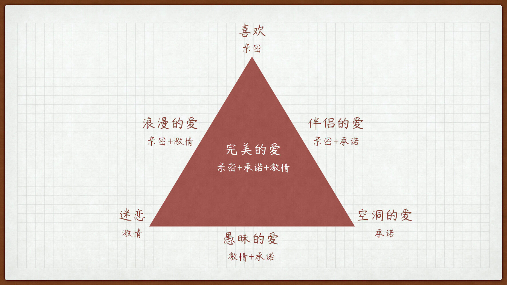

- 00 开篇词 爱与被爱，是人一生最值得学习的能力.md.html
- 01 是终点也是起点：你的恋爱目标是什么？.md.html
- 02 拒绝焦虑状态：TA到底爱我吗？.md.html
- 03｜冒犯有时是必要的：如何开启一段亲密关系？.md.html
- 04 亲密关系的本质是分享：如何把握暧昧的窗口期？.md.html
- 05 创造型与消费型活动：两个人在一起没事干怎么办？.md.html
- 06 小心看上去平平无奇的陷阱：如何防范高级渣？.md.html
- 07 无法回避的现实问题：“亲对象”也要明算账？.md.html
- 08 七年未必痒：如何营造亲密关系的新鲜感？.md.html
- 09 相亲与恋爱套路不一样：相亲有哪些需要注意的？.md.html
- 10 恋爱成功不是只有结婚一条路：分手是我错了吗？.md.html
- 11 独身主义也不赖：选择不结婚究竟是选择了什么？.md.html
- 12 姐弟恋也很可爱：姐弟恋有什么好处和注意事项？.md.html
- 13 千古难题真难办：如何跨越家庭背景的差异？.md.html
- 春节加餐1 公主，快放开那只巨龙！.md.html
- 春节加餐2 恋爱课答疑集锦：人潮之中彼此相视而窃喜.md.html
- 春节加餐3 恋爱课直播集锦：恋爱这件小事儿.md.html
- 结束语 但行好事，莫问前程.md.html
- 捐赠
08 七年未必痒：如何营造亲密关系的新鲜感？
你发现了吗？童话故事的最后，都是王子和公主从此过上了幸福的生活；很多电视剧和电影的结尾，也是只演到男女主人公走入婚姻的殿堂。可是，再往后呢，再往后就不敢写了……
因为，故事在这里戛然而止，一切爱情的美好才可以停留在原地，停留在人们心里。
在金庸武侠里，唯一敢于破例的就是《神雕侠侣》。射雕里古灵精怪的蓉儿妹妹成了神雕里面令人生厌的中年黄大妈、黄帮主、黄女侠，以至于我小时候读神雕一度认为是别人冒名写的。
但是不得不说，在一段感情里，可悲的也莫过于此。两个人经得起轰轰烈烈的紧张冒险，却躲不过平平淡淡的似水流年。三年之痛、七年之痒，握着你的手，就像左手牵右手……
之前，有很多朋友也跟我咨询过，为什么在一起久了，明明感觉自己还是很爱对方的，却总是提不起精神和另一半相处，甚至精神上会偶尔开个小差，对一些一面之缘的小姐姐却想入非非。
其实，这个问题很普遍，不仅会出现在相处多年的情侣之间，也常见于恋爱的各个阶段，
就比如说，两个人谈恋爱了一段时间，都觉得对方的各方面感觉还不错，可是就差了那么一点点触电的感觉。还比如说，有人留言问我，对方说和我相处像朋友多过像恋人怎么办？
这些都指向同一件事——新鲜感。
新鲜感有一种魔力，可以让普通人光彩照人、魅力爆棚；可以让寻常事咫尺兴波、跌宕起伏。这种魔力有多强，失去就有多痛。它可以轻松让你爱上一个人，也可以让你失去一个人。
今天，我们就来探讨一下关于新鲜感的话题。
新鲜感的本质是什么？
第一个问题，新鲜感究竟是什么？是一种感觉？还是一种对于未知的好奇心理？
有一位著名心理学家，曾提出了一个“恋爱三角形理论”。他认为一段完美的爱情应该由以下三个因素构成——激情、亲密和承诺。

我们口中所说的新鲜感，就是激情因素中的一种。如果给激情下个定义，激情就是两个人在一起因相互吸引而产生的高强度体验。据统计，激情的巅峰期往往只能维持半年左右。
有人认为，激情就是多巴胺的分泌，但这个想法对我们来说，没什么意义。在我看来（说明这是个独家理论），支撑激情的两个主要因素，分别是不确定性和异性攻击性。
不确定性很好理解，什么是异性攻击性？其实，和我们之前提到的“敢于冒犯”差不多。
这个理论很好地解释了为什么和“渣人”谈恋爱特有激情。第一，因为“渣人”的攻击性特强，一切都以拿下你为目标，持续推进关系；第二，他们又很不靠谱，也就是不确定性特别强。
老实人吃亏就吃在这，一方面，老实人非礼勿视、非礼勿言，攻击性弱到让有些人觉得“禽兽不如”；另一方面，老实人计划性极强，他们习惯把一切行动安排好，讨厌 list 出现任何变化。
所以，当你还在追求期或热恋期的时候，如果对方埋怨你木讷、不解风情、直男 / 直女，你不妨从这两个角度下手，增加你们关系中的激情因素比重，提升双方的新鲜感。
还有一个问题，为什么新鲜感难以保持？我们用上面的理论，同样可以来解释这个问题。因为双方呆的越久越熟悉，不确定性就越弱；同时该攻击的也都攻击完了，变得很安全。
你可能会想起来，这节课和我们在第 5 讲，探讨两个人在一起没事干怎么办的问题时，面临的困境有些类似，都属于激情过后的如何面对低谷期的问题。但是第 5 讲，我们主要从“亲密”和“承诺”这两个因素来展开，讲的是如何通过构建三角形的另外两级来替代激情的消逝。
亲密和承诺就像一道菜的食材，而激情却是食材的调味品。光吃调味品的话，入口可能很鲜，但是吃不了几口；但是如果没有调味品，再好的食材也会差了点味道。
那么，接下来，我们就来看看，如何持续营造新鲜感，给爱情调调味。
新鲜感的提升思路是什么？
首先，我们要明确，提升新鲜感，是和旧人做新事，不是和新人做旧事。通过不断更换伴侣寻找新鲜感的做法，无异于饮鸩止渴，从长期看是有损于新鲜感建立的。
其次，我们还要明确，提升新鲜感并不是靠所谓的创意和惊喜，没有人的创意是可持续的，最伟大的作家也做不到。你在网上搜索的所有创意套路也都是有限的，且很可能别人见过。
所以，从不确定性和攻击性两个维度来看，持续营造亲密关系的新鲜感主要有以下两种思路：
思路一：于变局中开新局——拥抱变化
每个人都有自己的生活习惯和规律，当两个人成为情侣的时候，其实互相磨合对方的习惯和规律就是一件特别有新鲜感的事情。你会发现，哦，原来生活还可以这样过。
所以，情侣刚在一起的时候，新鲜感十足，每天都在享受新鲜感带来的变化。
但是磨合完毕后，一切又变得完全可以预测，新鲜感也随之消失。所以，营造新鲜感的第一个重要的方法，就是拥抱变化。可能你要问，生活中哪里会有那么多变化呢？
拥抱变化其实很简单。
生活中每一件小事，我们都可以用 5W+1H 来总结。也就是，时间、地点、对象、目的、人员、方法。咱们除了人不变，其他都是可以变的，一变感觉就全变了。
比如说，之前我帮助一个朋友解决新鲜感的问题。我就问他，你和女朋友下班回家都干啥？他说，没啥事呀，吃完饭就躺在床上刷剧。我说那好办，你就改成坐在沙发上刷剧试试。
结果就因为挪了这么几步路，换了一个地方刷剧。他说两个人的感觉就变得不一样了，沙发上搂着的感觉跟床上搂着的感觉完全不同。他还想继续说下去，我及时制止了他。
拥抱变化更是一种心态，一种富有新鲜感的心态。
我有个朋友和对象出去旅行总是一肚子气，她作为一个女生，会把行程规划的井井有条、十分精致。但是她男朋友什么攻略都不做，出门一问三不知又拖拖拉拉，导致她频频打乱自己的计划，就会发生争吵。她男朋友还常常抱怨，跟她出去玩是个苦差事，比上班打卡还累。
于是，我就劝她，尝试一次没有行程单的旅行，每天就列一个必去的景点，其他都随心安排。结果怎么着，那次她玩完回来跟我说简直 high 爆了，虽然没有精确到分钟的行程计划，但是也不会按照预想，逐一地去看已经反复筛选过的景色，最美好的都是旅途的相遇。
这就是新鲜感，有的人浑身充满这种感觉，Ta 对于别人来说，就会有强烈的吸引力，但这种感觉是需要进行专门训练的。是的，拥抱变化不仅是一种意愿，也是一种能力的训练。
最基础的训练，就是观察变化、记录变化。比如说，每隔一个周期，可以是天，也可以是周，是月，记录一次你们两个人发生的事情，观察和之前比有哪些变化。
坚持一段时间，你很快就会变成一个“善变”的人，给爱人带来足够的新鲜感。
思路二：于危机中育先机——制造矛盾
当你们把情侣该做的事情都做完了，你们的苦恼也就从求而不得变成了按时上班、赚钱养家，这样的话，你们的异性攻击性直接降为负数，怎么办呢？
其实很简单，就是一句话：有困难要上，没有困难创造困难也要上。
明明没有危险的事情，要制造危险：你的小宝贝要被渴死在沙发上了，能不能有好心人端杯水出来拯救她啊；
明明没有门槛的事情，要制造门槛：你要是晚上陪我看十五分钟曼联的比赛，今天的晚饭就由我来做；
明明没有矛盾的事情，要制造矛盾：你明知道我今天心情不好，为什么要左脚先进门，罚你说一分钟好听的话来夸我。
你可能会说，这样是不是很作呀？
对，会作的女人最好命嘛，不但女生要会作，男生也要会作，作就能制造新鲜感。
端水、做饭、夸人可能是两个人每天都要做的事情，但是当你为这些日常的事件制造了一点困难后，立刻就会产生别样的新鲜感，成功之后你还会有满足感。就像打游戏一样，刀刀都死一屏幕的怪一点意思都没有，要好死不死才打死一个怪才有意思。
但是，这个矛盾的制造一定要讲究时机，讲究方法。原则就一条，要记住，越是毫无矛盾的事情越要作，这叫有情趣；越是容易发生矛盾的事情，越不作，这叫识大体。
这个矛盾可以是你们两个人之间的，也可以是你们和外部的。
比如说，给娃娃贴上讨厌人的名字，再痛殴一顿；或者找辆灰尘很重的车子，在窗上一起画只小猪，一起做一点小小的违背传统道德的事情，也会极大产生新鲜感。
香港有部电影《志明与春娇》，两个人就是在禁烟背景下，从烟友发展而成的爱情。
所以你看，新鲜感从来不需要什么炫酷的招式。新鲜感就是使某一天与其他日子不同，使某一个时刻与其他时刻不同，如此而已。重剑无锋、大巧不工。
内生的新鲜感
最后，关于新鲜感，我还要讲一点注意事项，就是什么是真正的新鲜感。
你可能要问，什么？还有真正的新鲜感？难道刚才我讲的都是假的新鲜感？当然不是，上面所说的方法确实是营造且持续营造新鲜感的好方法。但是通过前面的课程，你可能已经了解，我这个人特别喜欢讲道与术的差别，上面说的方法，只是术，下面我想再上升到道的层面说两点：
第一，享受新鲜感，就不能过于追求新鲜感。
这就跟吃饭一样，在口味太重尝不出味的时候，定期清淡饮食一两天，之后吃什么东西都有别样的味道。这个道理用佛家的话来讲就是：空即是色、色即是空
新鲜感也是一样，当你在内心将其作为奢侈品而非必需品的时候，才能更好地享受新鲜感。我们必须认识到，新鲜感不是亲密关系的全部。管你黛西艾比莫妮卡，过年回家还不是乖乖回到翠花丫蛋和二妮的状态。因为你和父母之间，不用新鲜感，也可以保持几十年如一日的生活模式，
所以，平淡和规律才是生活的常态，能够坚守常态的人才有能力享受偶尔打破规律的新鲜感；相反，企图把无规律的新鲜感作为常态的人，必然遭受失去新鲜感的反噬。
进一步地，你还需要认识到，亲密关系也不是生活的全部。
亲密关系也只是你生活的一部分，如果将其置于生活之上，那就是本末倒置。相反，保持独立的生活，保持独立的人格，你才能保持给对象的神秘感。360 度无死角展现在对象面前的人是不可能有新鲜感的，千呼万唤始出来、犹抱琵琶半遮面的人才有新鲜感。
第二，生活是新鲜感的源头。
武侠小说里的男女主人公可能会面临很多问题，生离死别、正邪有别，但就是不会出现没有新鲜感的问题。你看郭靖这样木讷的人，按理说营造新鲜感的能力很弱，但是也没这问题，为啥呢？
因为武侠里，他们的日子一天天太新鲜了。又是国仇家恨、又是拜师习武、又是路见不平、又是闯关打怪的，天天肾上腺素爆棚，哪里有功夫闲下来想没有新鲜感的事情。
每个人都是一个世界，亲密关系的新鲜感是你进入对方世界，分享自己世界的过程中产生的。
有的人可能比较擅长营销，他分享自己世界的窗口时，就十分酷炫，所以很容易让人着迷，大家都觉得这个人有激情。所以，纵然我们在前面讲了如何多维度地展现自己的世界，如何高亮度地装扮自己的窗口，但是最根本的还是你这个世界够大、够精彩。
在作家圈里，刘慈欣遣词造句的能力不算一流，但《三体》火到出圈的背后，就是足够精彩的世界，不假外物的内生新鲜感才是真正的新鲜感，这就是三体对大量文学作品的降维打击。
过好自己的每一天，就是营造自己新鲜感的降维打击。
爱情锦囊
情侣交往的各个阶段，特别是关系稳定之后的长期阶段，往往会出现缺乏新鲜感的问题。
今天，我们利用恋爱三角形理论（激情、亲密和承诺）分析了激情因素的产生，也就是新鲜感的实质，指出新鲜感的关键其实在于不确定性和异性攻击性。
利用这个理论，我们讲了两个提升新鲜感的方法，一是拥抱变化；二是制造矛盾。拥抱变化是一种意愿，也是一种要训练的能力；制造矛盾要选择合适的时机，以及合适的方法。
最后，我们从内生角度，探讨了更加持久稳定的新鲜感构建方法。一是降低预期，保持独立，不要一味追求新鲜感；二是花若盛开，蝶自然来；你若精彩，天自安排。
愿你每一天的太阳都是新的。
© 2019 - 2023 Liangliang Lee. Powered by gin and hexo-theme-book.